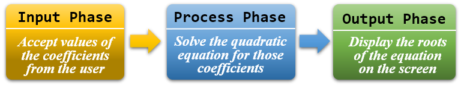

Data Flows
You may return more than one value from a function by using reference parameters to return values through the argument list.
As an example, suppose that you are writing a program to solve the quadratic equation below and you want to structure that program into three IPO phases like this:

Using this plan, your main function might look like this:
int main()
{
double a, b, c, root1, root2;
getCoefficients(a, b, c);
solveQuadratic(a, b, c, root1, root2);
printRoots(root1, root2);
}Here's what's happening:
- In line 4, the variables a, b and c are output parameters. Instead of passing values into the function, we're supplying three variables which will be filled up in the funciton itself.
- In line 5, a, b and c are input parameters. We are supplying their values to the solveQuadratic function so that it can do its work.
- The variables root1 and root2 are output parameters on Line 5; they will be filled in inside the function. On line 6, they are input parameters.
 This course content is offered under a
CC
Attribution Non-Commercial license. Content in this course
can be considered under this license unless otherwise noted.
This course content is offered under a
CC
Attribution Non-Commercial license. Content in this course
can be considered under this license unless otherwise noted.